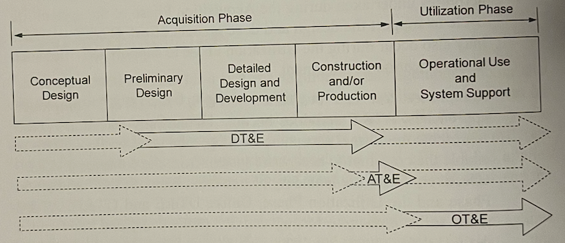
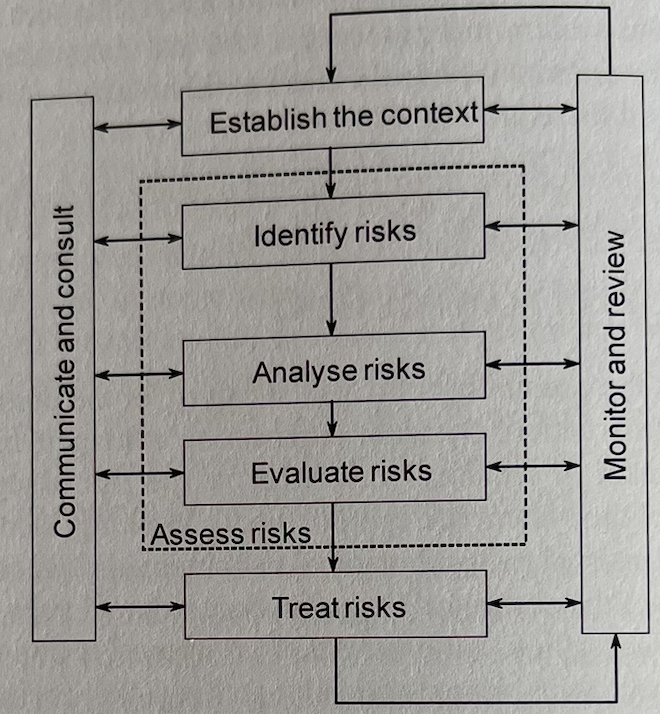
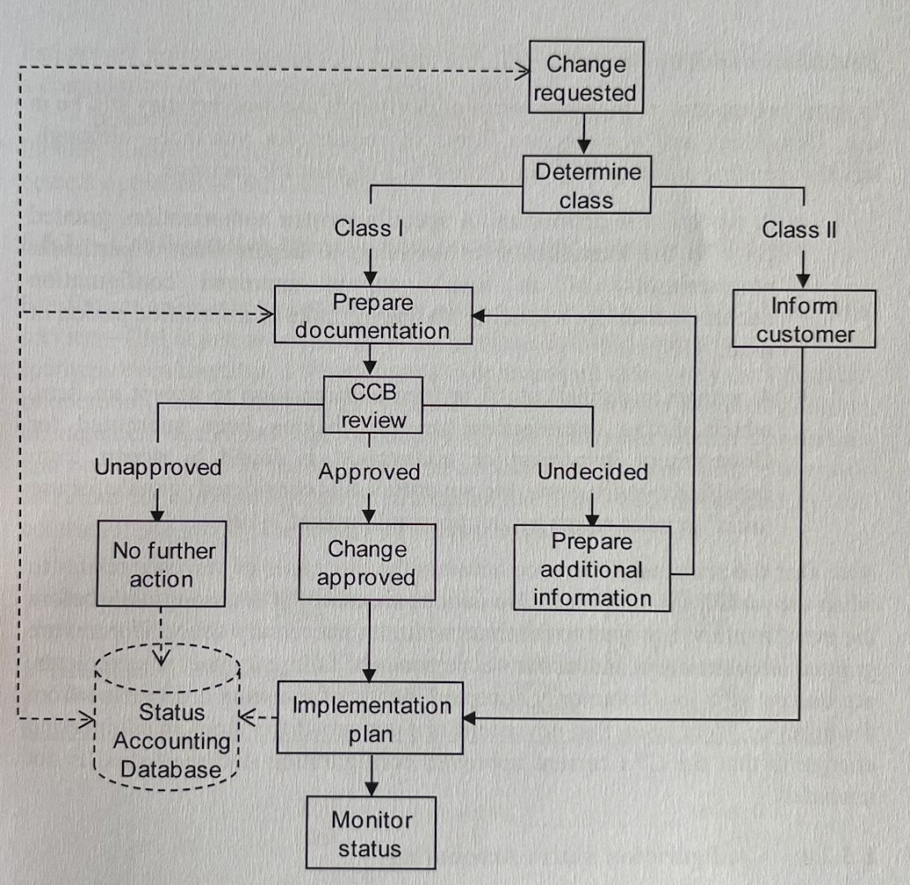
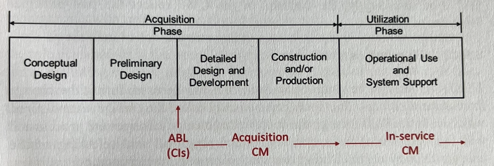
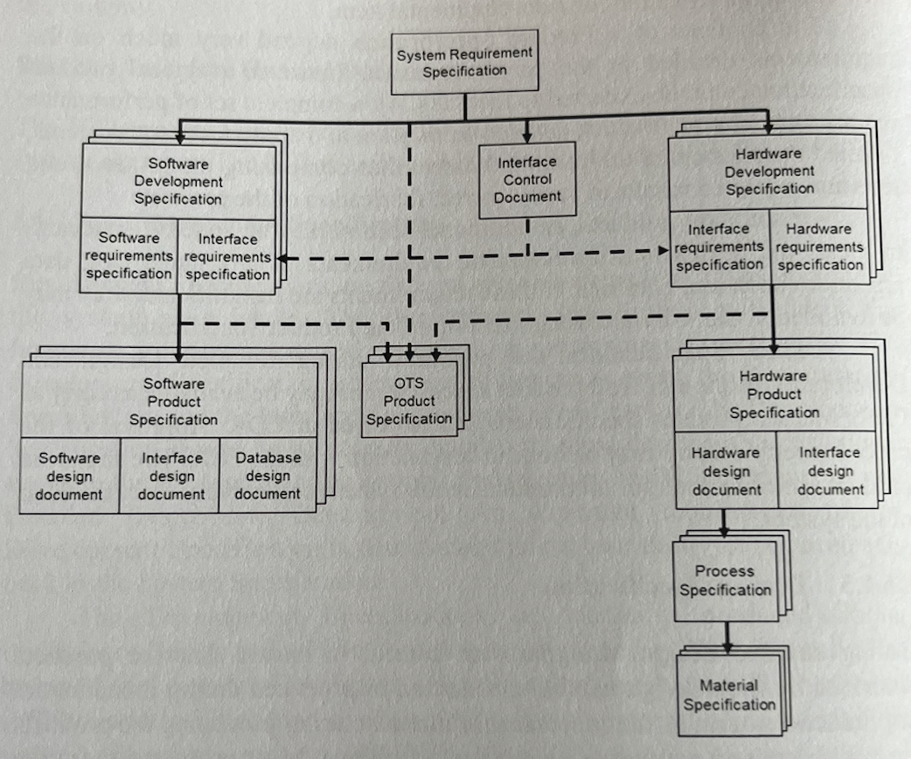
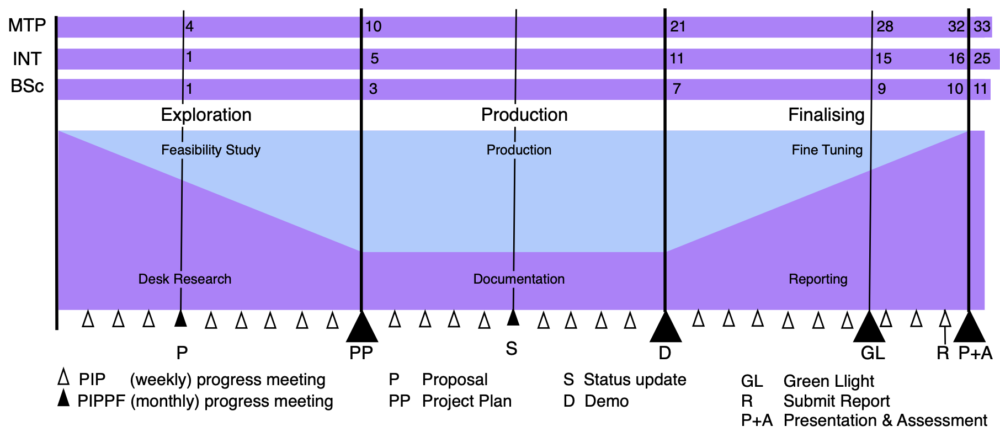
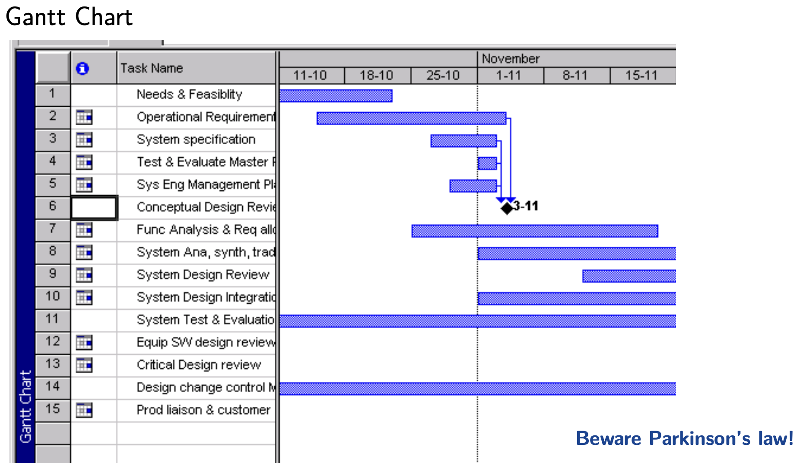
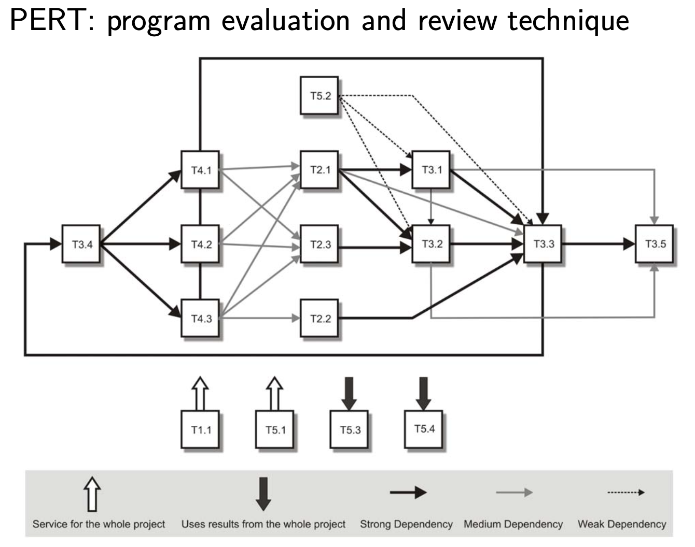

Final lecture of the Systems Engineering course — Chapter 8 of the ASE book.
Technical Review and Audit Management
In previous stages, we considered the major reviews and audits in each stage of the Acquisition Phase. This discusses the management considerations of technical reviews and audits which we discussed in Production, Use and Retirement.
As a small reminder, technical reviews and audits provide both the customer and contractor with a measure of progress.
Reviews and Audits
- clarifying and prioritizing design requirements,
- providing an effective means of formal communications between the stakeholders,
- recording design decisions and rationales for later reference,
- …
The customer normally specifies the required technical reviews and audits and their timing in the contractual documentation.
The technical review and audit effort is principally managed via a Technical Reviews and Audits Plan (TRAP). The TRAP (or the contract) documents all formal reviews, detailing the entry criteria that must be met prior to the commencement of the review or audit and the exit criteria that must be demonstrated prior to approval of the review or audit. It is normally drafted during Conceptual Design and should be finalized and approved prior to any contract being signed.
Test and Evaluation
A thorough evaluation of a system involves validating the system against the original business and stakeholder needs and requirements. The aim of a useful T&E approach is to test and evaluate the system progressively as it passes through the Acquisition and Utilization phases in order to avoid costly and time-consuming modifications to the system design late in the life cycle (could be considered Risk Mitigation).

Testing can be expensive, time-consuming, and sometimes dangerous. We try to avoid it if other evaluation methods are available.
Remember AT&E VS DT&E VS OT&E from Utilization. OT&E must be conducted in as realistic an environment as possible, where as DT&E and AT&E to a certain extent, can be performed in clinical conditions. This way, OT&E supports true validation of the system.

The contractor should be responsible for managing DT&E and AT&E to ensure a coordinated approach to testing.
T&E Activities in Conceptual Design
The customer typically prepares an outline of the TEMP to address the T&E requirements specified in the contract — the tenderers are required to respond with a draft TEMP that conforms to the customer’s preliminary outline. So TEMP is a contractual deliverable that details how the contractor intends to approach the overall test and evaluation effort.
T&E Activities in Preliminary Design
T&E during Preliminary Design achieves the following:
- evaluate any design areas that have been identified as a significant risks in the overall design;
- help select the preferred technical approach to the system design from the alternatives under consideration;
- help to validate that the preferred technical approach has the ability to meet the original user requirements;
- finalize the T&E requirements for the remainder of the Acquisition Phase and document this in the TEMP
T&E Activities in Detailed Design and Development
The DT&E effort during this stage concentrates on demonstrating that the design of the system is very close to complete and that all outstanding design issues have been adequately resolved.
Thus, some examples include:
- Functional testing,
- Interface testing,
- Environmental testing,
- Physical and configurational testing,
- Quality factor testing
Testing in this stage is normally conducted at the supplier’s facility. The tests qualify the system to enter into Construction and/or Production.
T&E Activities in Construction and/or Production
This stage is focused on AT&E conducted in the later stages of this stage as systems begin to be produced. It is conducted by operational personnel for either the contractor or the customer. OT&E is now able to start ensuring that all production systems meet the original system requirements as they are accepted into service and recommending any modification that may be required to the system.
T&E Activities in the Utilization Phase
Testing of the system continues throughout the Utilization Phase of the system life cycle. Typical focus is on integration with external systems, supportability issues, functional performance and operation in the true operational environment.
Test and Evaluation Master Plan (TEMP)
The TEMP is also commonly referred to as the Master Test Plan (MTP) or the Verification and Validation (V&V) Plan.
It is:
- required by the contract,
- prepared by the contractor
- reviewed and approved by the customer
It should be finalized and approved during Conceptual Design.
Technical Risk Management
Risk is defined as the possibility of a loss or injury, or the possibility of some disadvantage or destruction. Systems Engineering management is concerned with the management of technical risks.
- Internal risks are those that are within the control of the customer (e.g. unqualified staff)
- External risks are beyond the control of the project office. (e.g. a new law)

PERT and Critical Path Method (CPM) assist in risk analysis.
Risk Management Plan (RMP)
If there appears to be significant risk associated with a given system development, there may be a requirement for a RMP which is a formal document written by the contracting organization and reviewed and approved by the customer organization. The RMP details the risk management process and the results of the application of that process for the particular development effort.
Configuration Management
Configuration Management (CM) is the act of controlling and managing the physical and functional make-up (defined in the baselines) of the configuration items that comprise the system.
The main aims are to identify the functional and physical characteristics of selected system components, designated as configuration items; to control changes to those characteristics; and to record and report on change processing and implementation status.
Establishing the Baselines
Each approved baseline provides a firm position from which to move forward.
- The Functional Baseline (FBL) of the system has at its centre the SyRS that is produced during the early stages of the Acquisition Phase
- The Allocated Baseline (ABL) is defined by the set of Development Specifications for each of the CIs making up the system.
- The Product Baseline (PBL) is the set of Product Specifications for each of the CIs comprising the system. It is approved by FCA and PCA.
FBL > ABL > PBL in terms of priority in case of conflict or discrepancy.
Configuration Management Functions
- CM planning and management ensures the appropriate tasks are performed and the necessary resources are available at the right times
- Configuration Identification identifies the CIs to be placed under configuration management. The initial identification of CIs represents the translation from functional to physical description during Preliminary Design.
- Configuration Change Management provides up-to-date info on the configuration of the items placed under control. A body called the Configuration Control Board (CCB) is charged with the responsibility of managing changes.
- The CCB includes major stakeholders and users, relevant ICWG (Interface Control Working Group) participants, and production representatives.
- The CCB investigates the change and decides on the severity of the change.
- Major changes (changes to form, fit or function of the system) are called Class I. The customer must be involved in the approval of these.
- Minor changes (change in documentation, changes to the aspect of the design) are called Class II. The customer should be informed regarding these.
- The customer must be involved in assessing a change as major or minor.

Configuration Management in Acquisition and in Utilization
CM does not stop when a system is introduced into service if a system is to be managed effectively (possibly over decades).
There are at least 2 CM activities — 1 conducted by the contractor during Acquisition and 1 conducted by the customers in-service management staff.

Configuration Management Plan (CMP)
The CMP is one of the major systems engineering management plans and details the approach and processes involved in the configuration management for the project. As mentioned above, there will be 2 CMPs.
Change Proposals
There are 2 major types of change proposals relevant to Systems Engineering Management:
- Engineering Change Proposals (ECP) — relates to the engineering design aspects of the project
- Contract Change Proposals (CCP) — relates to the contractual aspects of the project.
The content and use of ECP are determined by the customer organization and stated in the contractual document. The information will include a statement of the reason for the change, the various alternative solutions considered and the preferred solution. Another important piece of information is an impact assessment of the change that analyses the impact the change will have on other aspects of the design, the interfaces with other CIs, and the likely changes required to the current documentation set.
System Requirement Specification (SyRS)
- An SyRS needs to state the requirement of the system in terms of both operational terms and maintenance and support terms, and document the interfaces between the system and its environment, and between major functional areas of the system. Significant design constraints should also be detailed in the SyRS.
- The requirements should avoid reference to products and equipment and should concentrate on explaining the requirements in mission or capability terms.
- It will define the FBL of the system.

Systems Engineering Management Planning (SEMP)
- SEMP should cover the entire systems engineering effort.
- Constructed by the contractor in accordance with the systems requirements in the contractual documentation and reviewed and approved by the customer.
- The SEMP should cover all of the major systems engineering functions: CMP, RMP, TRAP, TEMP and CI lists as well as internal company design plans and processes.
- Detail positions of particular responsibility within the design team: chief designers, hardware and software team leaders, project managers, testing personnel and also some key qualifications and skills.
Example of Project Management for the MsC thesis

Gantt chart: if one task gets longer it shift everything
We can set milestones
And some tasks depend on the milestones
Helps with traceability

Parkinson’s Law: the work always expands to the time assigned (people will extend it to the time provided).
PERT: We are X% sure it’s going to get done in 3 weeks
